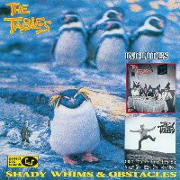

|
The Tables
"In A Perfumed Garden"
The Tables are often dubbed as the
Norwegian TVPs, which they aren't, since they have a very personal and own
style which bears only very superficial resemblances to TVPs'. Their brilliant
debut Shady Whims & Obstacles includes a great
instro version of "In A Perfumed Garden" made only with an ocarina and
percussions which sound like, and probably are, kitchen pans!
|

[1990 -
Shtooopid - OOO 01 - LP]
[1992 - Perfect Pop - POP 7 - CD] |